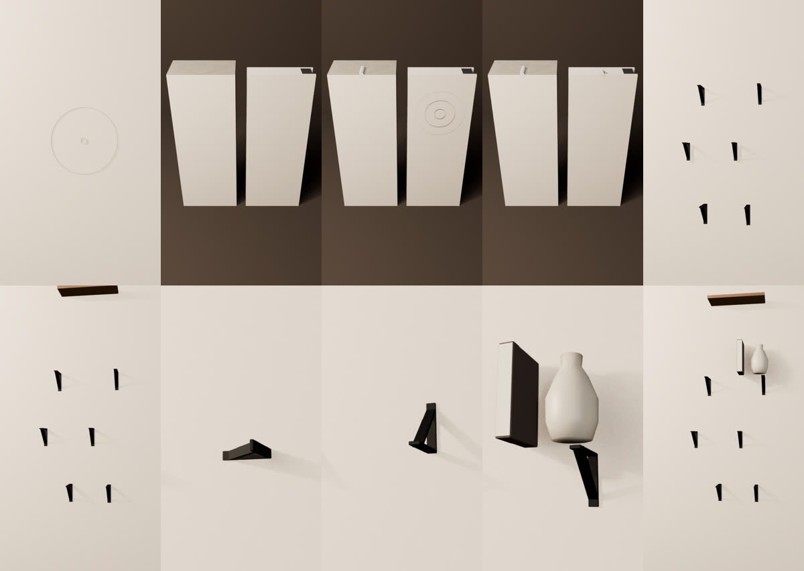
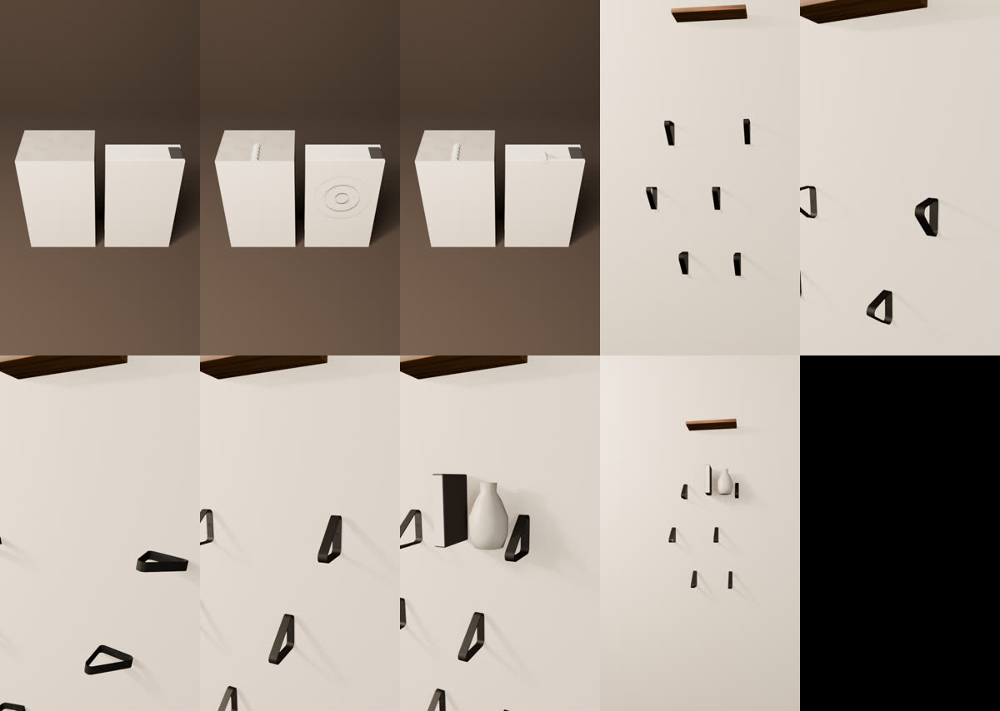
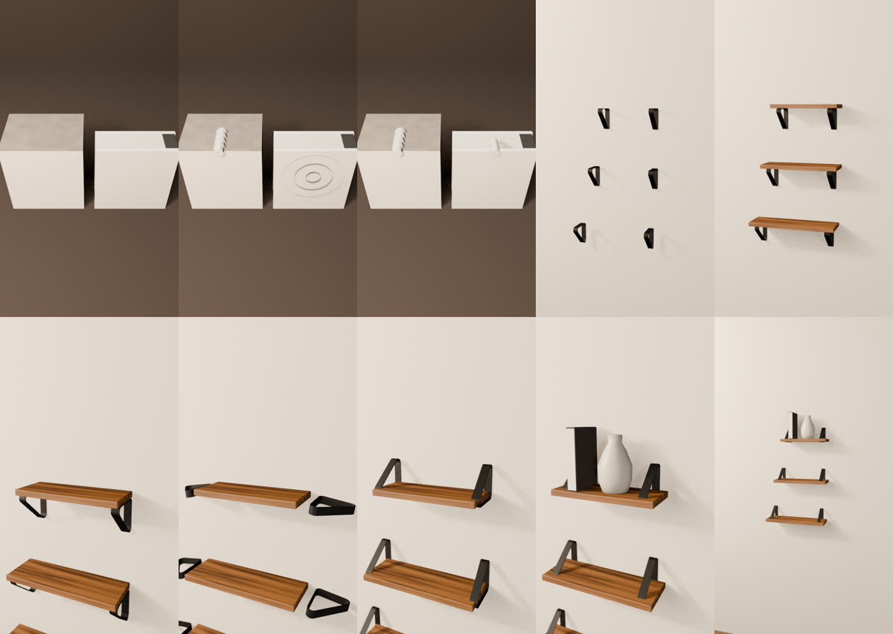
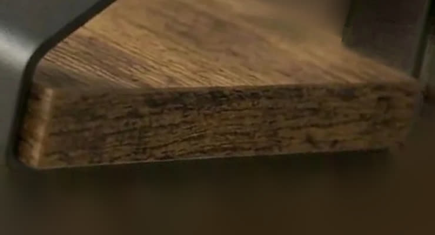
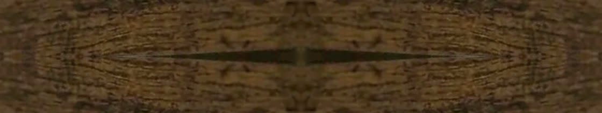
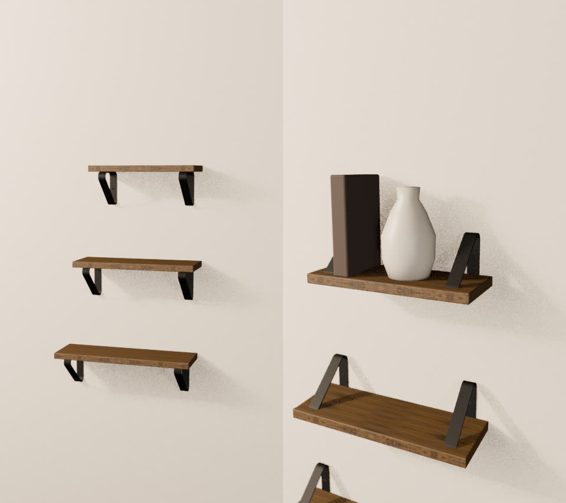
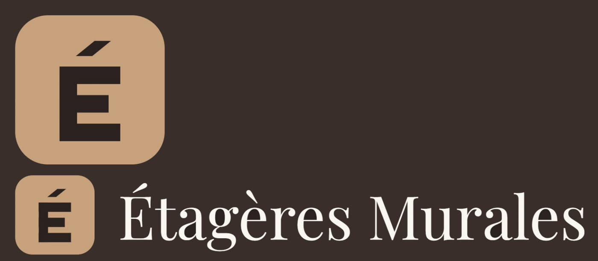
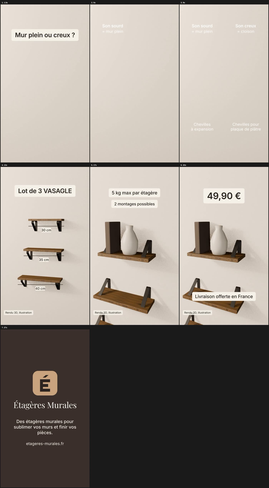
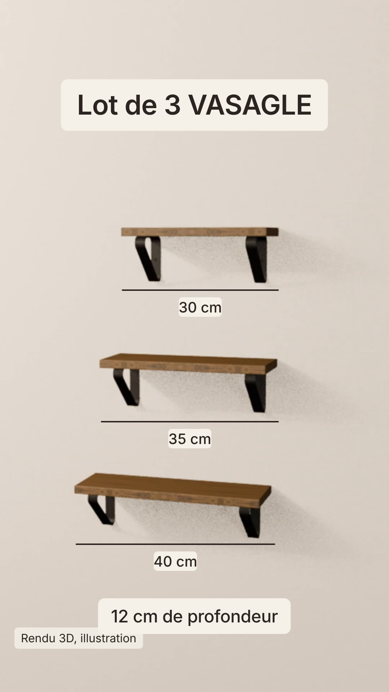

Ce qui a été fait le 9 novembre 2026 pour la vidéo de 30 s en 9:16 : 15 s éducatives sur les chevilles, puis le lot de 3 étagères VASAGLE. La 3D est faite avec Blender, le montage avec HyperFrames, la voix avec ElevenLabs.
bpy), utilisé sans interface. Pas de GPU dans cet environnement : le rendu Eevee tourne sur le processeur.Script scene.py : mur beige, onde, coupe du mur (plein à gauche, cloison à droite), chevilles, supports, plateaux, livre et vase. Dix images de contrôle en 480x854.

Tes photos montrent un triangle fermé en bande d'acier, coins arrondis, plaque murale avec trous en serrure, bras horizontal sous le plateau. Le support est remodélisé ainsi. Pour le retournement, il glisse hors du plateau, pivote et revient : le plateau passe dans le triangle.

Ordre de l'infographie : 30 cm en haut, 35 au milieu, 40 en bas, en décalé. Hauteur 11 cm, profondeur 12 cm. Coupe du mur plus plongeante, chevilles agrandies pour la lisibilité.

Fiche « Étagères murales flottantes lot de 3 VASAGLE » : 49,90 €, couleur Marron vintage, hauteur 11 cm. Le texte de l'infographie des dimensions indique 5 kg par étagère. C'est ce chiffre qui est dans la vidéo.
L'infographie que tu m'as envoyée affiche 10 kg. Si c'est l'image en ligne sur la fiche, elle contredit son propre texte : à corriger sur Shopify.
Le chant du plateau est redressé, recadré et assemblé en miroir pour se répéter sans raccord visible. La tuile représente environ 24 x 4,5 cm de bois réel.



Proposition C de ton PDF, version fond sombre : monogramme « É » et texte « Étagères Murales », détourés pour la carte de fin brune.

Voix « Théo » sur ElevenLabs, une prise de 24 s (412 crédits). Elle est découpée phrase par phrase et chaque phrase est placée sur sa scène.
| Dans la vidéo | Phrase |
|---|---|
| 0,25 s | Avant de percer : votre mur est plein ou creux ? |
| 3,55 s | Frappez dessus. |
| 4,45 s | Son sourd : mur plein, chevilles à expansion. |
| 7,15 s | Son creux : cloison, chevilles pour plaque de plâtre. |
| 10,1 s | Ensuite, trois étagères VASAGLE : 30, 35 et 40 centimètres, 12 de profondeur. |
| 15,4 s | Jusqu'à 5 kilos par étagère. Accessoires de montage et notice en français inclus. |
| 20,15 s | 49 euros 90, livraison offerte en France. |
| 24,6 s | Lien dans la bio. |
Composition 1080x1920 à 30 i/s : clips 3D muets, accroches en cartouche crème, cotes qui se tracent, mention « Rendu 3D, illustration » de 10 à 24 s, « Objets non inclus », prix, carte de fin. Vérification automatique passée (lisibilité, débordements, mise en page).


Les deux clips 3D se rendent en 540x960 avec la vraie texture, puis sont agrandis en 1080x1920 au montage. En 1080x1920 natif, le rendu prendrait environ 8 h sur ce processeur ; chez toi, la RTX 3060 peut le faire en natif.
Reste à faire : assembler et t'envoyer final.mp4.
Branche claude/trusting-tesla-7t8d8z du dépôt cr-ation-de-contenue :
vasagle-video/scene.py : la scène Blender et son animation.vasagle-video/assets/detail-support.png : la tuile de bois.vasagle-video/montage/index.html : le montage HyperFrames.vasagle-video/montage/assets/ : logo, voix, polices.